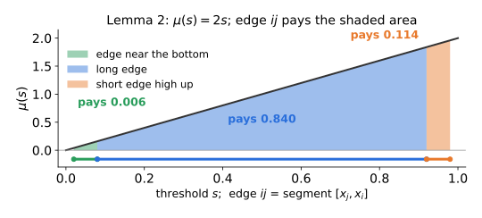
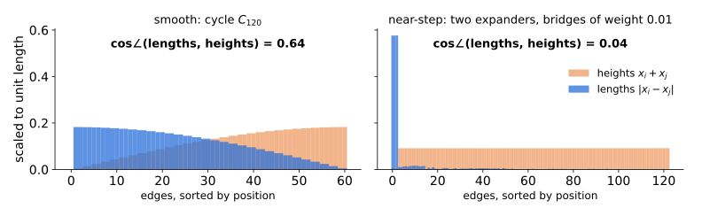
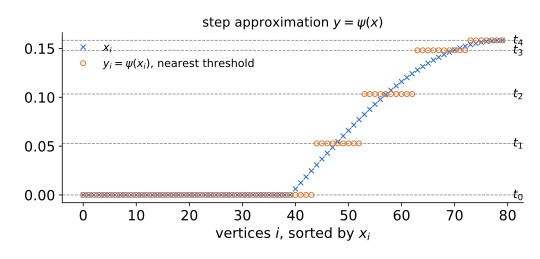
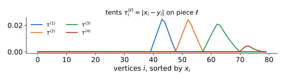
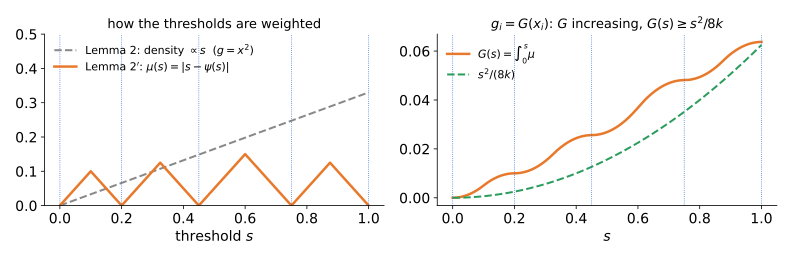

Why spectral partitioning beats its worst case
Kwok, Lau, Lee, Oveis Gharan & Trevisan (STOC 2013)
\(G=(V,E,w)\), \(\ d_i=\sum_j w_{ij}\)
\(L_{rw}=I-D^{-1}A\) with eigenvalues \(0=\lambda_1\le\lambda_2\le\dots\le\lambda_n\le 2\), \(\ \lambda:=\lambda_2\).
\[\Phi(S)=\frac{w(S,\bar S)}{\min\{\mathrm{vol}(S),\mathrm{vol}(\bar S)\}},\qquad \Phi(G)=\min_S\Phi(S),\]
Cheeger. \(\ \tfrac12\lambda \le \Phi(G) \le \sqrt{2\lambda}\), and the best sweep set \(S^\star\) of the Fiedler vector \(f\) has \(\Phi(S^\star)\le\sqrt{2\lambda}\).
Proof: Lemma 3 (median shift) \(\to\) Lemma 2 (square, \(\ell_2^2\to\ell_1\)) \(\to\) Lemma 1 (sweep).
Improvement: Replace Lemma 2 by a better, adaptive \(\ell_2^2\to\ell_1\) map.
Today. The \(\sqrt{\cdot}\) loss only happens when the Fiedler vector is smooth, and smooth eigenvectors force \(\lambda_k\) to be small. With a gap \(\lambda_k\gg\lambda\), the same algorithm does much better: \[\Phi(S^\star) \;\le\; O(k)\,\frac{\lambda}{\sqrt{\lambda_k}}.\]
Plan: statement & intuition · full proof · tightness, demo, consequences
For \(C_n\): \(\ \lambda = 1-\cos(2\pi/n) \approx 2\pi^2/n^2\), \(\quad \Phi(C_n) = 2/n\).
No improvement of Cheeger is possible as a function of \(\lambda\) alone.
Question. Join two expanders on \(n/2\) vertices by edges of total weight \(1/n\). Then \(\lambda=\Theta(1/n^2)\), as for the cycle, but also \(\Phi(G)=\Theta(1/n^2)\): the lower bound is tight and the sweep is near-optimal. What distinguishes the two graphs?
Answer (KLLOT): the rest of the spectrum. For the cycle, \(\lambda_3=\lambda_2\) and \(\lambda_k = \Theta(k^2/n^2)\) grows slowly.
Theorem (KLLOT ’13). For every graph \(G\) and every \(k\ge 2\), \[\Phi(G) \;\le\; \Phi(S^\star) \;\le\; 12\sqrt2\; k\,\frac{\lambda}{\sqrt{\lambda_k}}.\]
Contrapositive reading: if Cheeger is tight (\(\Phi \approx \sqrt{\lambda}\)), then \(\lambda_k \lesssim k^2 \lambda\) for all \(k\). Graphs on which Cheeger is tight have “cycle-like” spectra.
Higher-order Cheeger (previewed in Lecture 6; Lee–Oveis Gharan–Trevisan ’12, Louis–Raghavendra–Tetali–Vempala ’12): \[\rho_k(G) := \min_{S_1,\dots,S_k \text{ disjoint}}\ \max_\ell \Phi(S_\ell), \qquad \frac{\lambda_k}{2}\le \rho_k(G) \le O(k^2)\sqrt{\lambda_k}.\]
Theorem (KLLOT ’13). For every graph \(G\) and every \(k\ge 2\), \[\Phi(G) \;\le\; \Phi(S^\star) \;\le\; 12\sqrt2\; k\,\frac{\lambda}{\sqrt{\lambda_k}}.\]
Notation: Let: \[R_2(x)=\dfrac{\sum_Ew_{ij}(x_i-x_j)^2}{\sum_id_ix_i^2} \textrm{ and } R_1(x)=\dfrac{\sum_Ew_{ij}|x_i-x_j|}{\sum_id_i|x_i|} \text{ (\textbf{uncentered})}\]
Write \(\;N(x)=\sum_{ij\in E}w_{ij}(x_i-x_j)^2\;\) and \(\;D(x)=\sum_i d_ix_i^2\).
Let \(f\) be the Fiedler vector: \(f\perp_d\mathbf 1\) and \(R_2(f)=\lambda\).
The original proof had 3 steps.
Median-Shift (Lemma 3, Lecture 6): median-shift \(f\), keep the better half, rescale: \(x\ge0\) with \(\pi(\mathrm{supp}\,x)\le\tfrac12\), \(R_2(x)\le\lambda\), \(D(x)=1\). Its sweep sets are sweep sets of \(\pm f\), so \(\Phi(S^\star)\le\Phi_{\rm sw}(x) := \min_{t\ge0}\Phi(\{x_i>t\})\).
\(\mathbf{\ell_2^2 \to \ell_1}\) (Lemma 2, Lecture 6): for \(x\ge0\) with \(\pi(\mathrm{supp}\,x)\le\frac12\), let \(g_i = x_i^2\). Then \(R_1(g) \le \sqrt{2R_2(x)}\).
Sweep Rounding on Cut Cone (Lemma 1, Lecture 6): for \(g\ge0\) with \(\pi(\mathrm{supp}\,g)\le\frac12\), some sweep set of \(g\) has \(\Phi\le R_1(g)\).
For improving Cheeger’s inequality, we focus on strengthening the \(\ell_2^2 \to \ell_1\) step by choosing a more general transformation \(g_i = G(x_i)\) rather than just \(x_i^2\). Moreover, our choice of final choice of \(g\) will depend on the specific structure of \(x\).
Take \(g_i = G(x_i)\) with \(G\) increasing, \(G(0)=0\), and density \(\mu=G'\). Then \(g\) has the same sweep sets as \(x\), and by the sweep-cut identities with \(S_s=\{i:x_i>s\}\): \[R_1(g) = \dfrac{\sum_Ew_{ij}|g_i-g_j|}{\sum_id_i|g_i|} = \frac{\int_0^\infty \mu(s)\,w(S_s,\bar S_s)\,ds}{\int_0^\infty \mu(s)\,\mathrm{vol}(S_s)\,ds}.\] Choosing \(g\) means choosing how to weight the thresholds.
Let \(g_i = G(x_i)\) with density \(\mu = G'\), and \(\bar\mu_{ij}\) := the average of \(\mu\) over \([x_j,x_i]\). \[|g_i-g_j| = \int_{x_j}^{x_i}\mu(s)\,ds = \underbrace{|x_i-x_j|}_{\text{length}}\cdot\,\bar\mu_{ij}, \qquad \sum_i d_i g_i = \sum_i d_i\!\int_0^{x_i}\!\mu(s)\,ds.\] Each edge is charged the density where it sits; each vertex is credited the density below it.

Lemma 2 takes \(\mu(s)=2s\), so \(\bar\mu_{ij} = x_i+x_j\): the edge’s height. Cauchy–Schwarz: \[ \sum_{ij\in E} w_{ij}\,|g_i-g_j|\, \le \sum_{ij\in E} w_{ij}\,|x_i-x_j|\,\bar\mu_{ij}\\ \le \sqrt{N(x)}\,\sqrt{\textstyle\sum_{E} w_{ij}\,\bar\mu_{ij}^2} \le \sqrt{N(x)}\,\sqrt{2D(x)}\ \] Dividing by \(D(x)\), we have \(R_1(x^2)\le\sqrt{2R_2(x)}\).
The loss. Cauchy–Schwarz is tight only if \(\bar\mu_{ij}\propto|x_i-x_j|\) on every edge: a short edge sitting high up pays far more than its length.
Def. \(y\in\mathbb R^V\) is an \(h\)-step vector if it takes at most \(h\) distinct values \(t_1<\dots<t_h\) (the steps).
In the Cauchy–Schwarz step of Lemma 2, lengths \(|x_i-x_j|\) are paired with heights \(\bar\mu_{ij}=x_i+x_j\).

Tight (up to constants) when lengths \(|x_i-x_j|\) are roughly proportional to heights on most edges: smooth vectors, like the cosine on the cycle.
Loose when \(x\) is close to an \(h\)-step vector: an edge inside a step has length \(\approx0\) but height \(\approx 2t_\ell\), a short edge sitting high up.
Goal: \(R_1(g) \le 12\sqrt2\,k\,R_2(x)/\sqrt{\lambda_k}\) for a suitable \(g=G(x)\), with \(x\ge0\) and \(R_2(x)\le\lambda\).
Tight Case (smooth vector \(x\)): Show that \(\lambda_k\) is small by constructing \(k\) independent test vectors \(z^{(1)},\dots,z^{(k)}\) with small Rayleigh quotients \(R_2(z^{(\ell)})\).
Loose Case (vector \(x\) close to an \(O(k)\)-step vector): improve Lemma 2 by focusing on edges between steps, which contribute significantly to the Rayleigh quotient, while edges inside steps contribute very little.
| Step | Statement | Source |
|---|---|---|
| Lemma B | Disjoint supports: \(\lambda_k \le 2\max_\ell R_2(z^{(\ell)})\) | intro (Courant–Fischer) |
| Lemma 3.1 | \(\exists\) \((2k{+}1)\)-step \(y\) with \(D(x-y) \le 4R_2(x)/\lambda_k\) | uses B |
| Lemma 2′ | for a suitable \(g\): \(\ R_1(g)\le 4kR_2(x) + 4\sqrt2\,k\sqrt{D(x-y)\,R_2(x)}\) | replaces Lemma 2 |
Recall \(R_2=N/D\); throughout, \(D(x)=1\).
Lemma B (KLLOT Lemma 2.3). If \(z^{(1)},\dots,z^{(k)}\neq0\) have pairwise disjoint supports, then \(\ \lambda_k\le 2\max_\ell R_2(z^{(\ell)})\).
Courant–Fischer: \[\lambda_k = \min_{\dim U=k}\; \max_{z\in U\setminus0}R_2(z)\]
Disjoint supports make the \(z^{(\ell)}\) independent: take \(U=\mathrm{span}\{z^{(\ell)}\}\) and \[z=\sum_\ell c_\ell z^{(\ell)} \textrm{ with } \vec{c} \neq 0.\]
A ratio of sums is at most the largest ratio: \(\ R_2(z)\le2\max_\ell R_2(z^{(\ell)})\). \(\square\)
Lemma 3.1 encapsulates the dichotomy between smooth and step-like vectors. Either \(x\) is close to a \((2k{+}1)\)-step vector, or \(\lambda_k\) is small.
Def. Thresholds \(0=t_0\le t_1\le\dots\le t_m\); \(\ \psi(s)\) := the threshold nearest to \(s\); \(\ y_i := \psi(x_i)\). (\((m{+}1)\)-step approximation.)
Lemma 3.1. There is a \((2k{+}1)\)-step approximation \(y\) of \(x\) with \[D(x-y) \;\le\; \frac{4\,R_2(x)}{\lambda_k}.\]

If \(\lambda_k \gg R_2(x)\), then \(x\) is essentially a step vector with at most \(2k{+}1\) levels.
Budget \(C := \dfrac{2R_2(x)}{k\lambda_k}\), \(\ M := \max_i x_i\), \(\ t_0 := 0\). For \(\ell = 1,\dots,2k\):
(\(m_\ell\) is continuous and nondecreasing in \(t_\ell\), starting at \(0\).)
Success (\(t_{2k}=M\)): \(\ D(x-y) = \sum_\ell m_\ell \le 2k\,C = 4R_2(x)/\lambda_k\). \(\checkmark\)
Failure (\(t_{2k}<M\)): all \(2k\) pieces have mass exactly \(C\). We show this contradicts Lemma B.
Tents: \(\tau^{(\ell)}_i := |x_i-y_i|\) if \(x_i\in[t_{\ell-1},t_\ell]\), else \(0\). These are disjointly supported, with \(D(\tau^{(\ell)}) = C\).

Claim. For every edge: \(\ \sum_\ell \big(\tau^{(\ell)}_i-\tau^{(\ell)}_j\big)^2 \le (x_i-x_j)^2\).
Summing over edges: \[\sum_{\ell=1}^{2k}R_2(\tau^{(\ell)}) = \frac{1}{C}\sum_\ell N(\tau^{(\ell)}) \le \frac{N(x)}{C} = \frac{R_2(x)}{C} = \frac{k\lambda_k}{2}.\] By averaging, at least \(k\) of the \(2k\) tents have \(R_2(\tau^{(\ell)}) < \lambda_k/2\). Lemma B then gives \(\lambda_k \le 2\max_\ell R_2(\tau^{(\ell)}) < \lambda_k\). Contradiction. \(\square\)
Lemma 2′ (KLLOT Prop 3.2). For any \((2k{+}1)\)-step approximation \(y\) of \(x\) (with \(D(x)=1\)), the vector \(g\) below satisfies \[\Phi_{\rm sw}(x) \;\le\; R_1(g) \;\le\; 4k\,R_2(x) \;+\; 4\sqrt2\,k\,\sqrt{D(x-y)\,R_2(x)}.\]

Claim 3.3. \(\ g_i \ge \dfrac{x_i^2}{8k}\ \) for all \(i\). Hence \(\ \sum_i d_i\,g_i \ge \dfrac{D(x)}{8k} = \dfrac1{8k}\).
Let \(x_i\in(t_\ell,t_{\ell+1}]\) with \(\ell\le 2k-1\).
This is where the factor \(k\) is paid: a sawtooth density puts less weight on large values than the density \(2s\).
Claim 3.4. For every edge \(ij\): \[|g_i-g_j| \;\le\; \tfrac12\,|x_i-x_j|\,\big(a_i + a_j + |x_i-x_j|\big).\] Here \(a_i := |x_i-y_i|\) is the distance from \(x_i\) to its step.
For \(s\) between \(x_i\) and \(x_j\): \(y_i,y_j\) are thresholds, so \[\begin{aligned}\mu(s) &\le \min\{|s-y_i|,\,|s-y_j|\}\\ &\le \tfrac12\big(|s-x_i|+a_i+|s-x_j|+a_j\big),\end{aligned}\] and \(|s-x_i|+|s-x_j| = |x_i-x_j|\). Integrate over \(s\) between \(x_i\) and \(x_j\). \(\square\)
Compare with Lemma 2, \(|x_i^2-x_j^2| = |x_i-x_j|\cdot(x_i+x_j)\): the edge’s height has been replaced by its distance to the steps plus its own length.
Numerator, by Claim 3.4 and then Cauchy–Schwarz: \[\begin{aligned} \sum_{ij\in E} w_{ij}\,|g_i-g_j| &\le \tfrac12N(x) + \tfrac12\sum_{ij\in E} w_{ij}\,|x_i-x_j|\,(a_i+a_j)\\ &\le \tfrac12R_2(x) + \tfrac12\sqrt{N(x)}\,\sqrt{\textstyle\sum_{ij\in E} w_{ij}\,(a_i+a_j)^2}\\ &\le \tfrac12R_2(x) + \tfrac12\sqrt{R_2(x)}\,\sqrt{2D(x-y)}, \end{aligned}\] using \((a+b)^2\le 2a^2+2b^2\) and \(\sum_{ij\in E} w_{ij}(a_i^2+a_j^2) = \sum_i d_ia_i^2 = D(x-y)\).
Denominator \(\sum_i d_ig_i\ge 1/(8k)\) (Claim 3.3). So \[\begin{aligned}R_1(g) &\le 8k\Big(\tfrac12R_2(x) + \tfrac{1}{\sqrt2}\sqrt{R_2(x)\,D(x-y)}\Big)\\ &= 4kR_2(x) + 4\sqrt2\,k\,\sqrt{D(x-y)\,R_2(x)}. \;\square\end{aligned}\]
Lemma 3 gives \(x\); Lemma 3.1 gives \(y\) with \(D(x-y) \le 4R_2(x)/\lambda_k\). Then by Lemmas 1 and 2′: \[\begin{aligned}\Phi(S^\star)\le\Phi_{\rm sw}(x)\le R_1(g) &\le 4kR_2(x) + 4\sqrt2\,k\cdot 2\frac{R_2(x)}{\sqrt{\lambda_k}}\\ &= 4kR_2(x) + 8\sqrt2\,k\,\frac{R_2(x)}{\sqrt{\lambda_k}}.\end{aligned}\] Since \(\lambda_k\le 2\), \(\ 4kR_2(x)\le 4\sqrt2\,k\,R_2(x)/\sqrt{\lambda_k}\), so \[\boxed{\ \Phi(S^\star) \le 12\sqrt2\,k\,\frac{R_2(x)}{\sqrt{\lambda_k}} \le 12\sqrt2\,k\,\frac{\lambda}{\sqrt{\lambda_k}}\ } \quad\square\]
Same template as Lecture 6: Lemma 3 → (new) Lemma 2′ → Lemma 1. The only change is the \(\ell_2^2\to\ell_1\) map, designed to fit the structure of \(x\), plus one averaging argument (Lemma 3.1) that says when that structure exists.
\(C_n\) has eigenvalues \(1-\cos(2\pi j/n)\), so \(\lambda_k = 1-\cos\!\big(2\pi\lfloor k/2\rfloor/n\big) = \Theta(k^2/n^2)\).
| \(n\) | \(n\cdot\Phi(C_n)\) | \(k=2\) | \(k=3\) | \(k=5\) | \(k=9\) | \(k=17\) |
|---|---|---|---|---|---|---|
| 100 | 2 | 8.88 | 13.33 | 11.11 | 10.02 | 9.54 |
| 400 | 2 | 8.89 | 13.33 | 11.11 | 10.00 | 9.45 |
| 1600 | 2 | 8.89 | 13.33 | 11.11 | 10.00 | 9.44 |
Columns \(k\): \(\ n\cdot k\lambda/\sqrt{\lambda_k}\). Both columns are \(\Theta(1)\), so \(\Phi(C_n) = \Theta(k\lambda/\sqrt{\lambda_k})\) for every \(k\).
Standalone: demos/improved-cheeger-demo.html. Try: two expanders, ε → 0 (Cheeger’s guarantee blows up, KLLOT’s stays flat); three expanders with k = 3 vs. k = 4; cycle (both guarantees grow ∝ n).